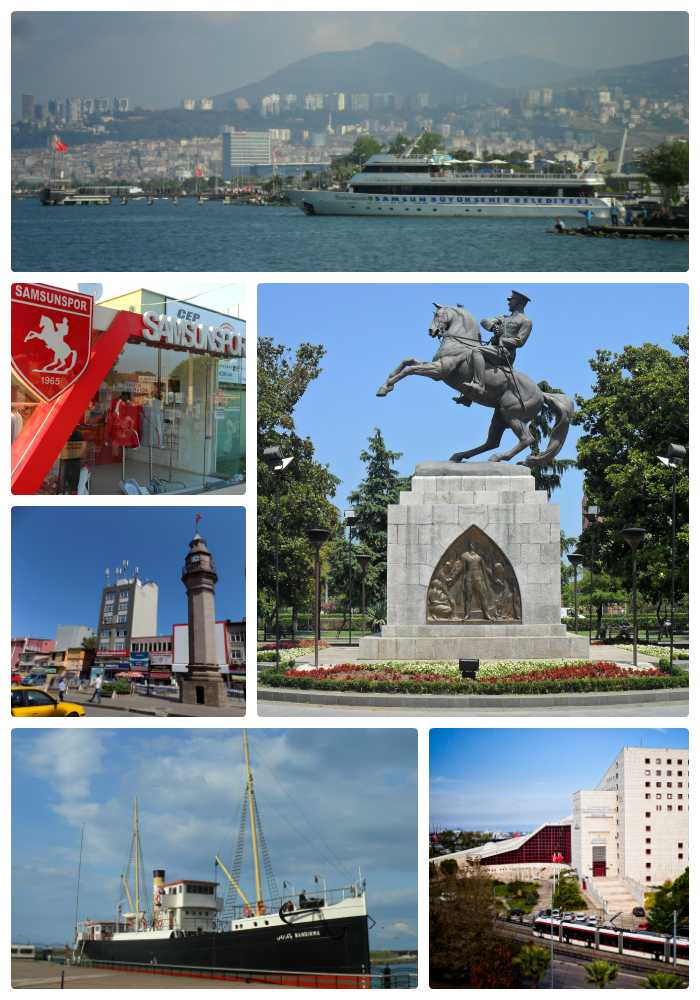
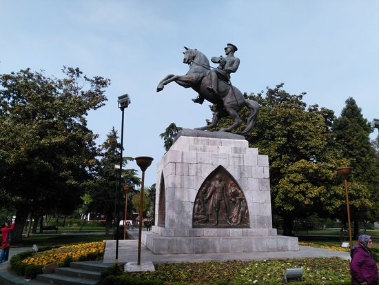
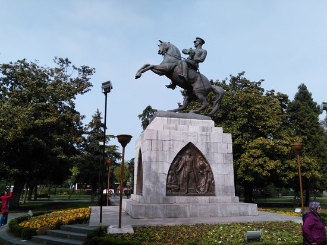
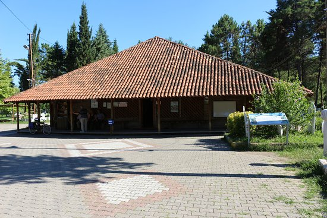

Samsun Hakkında
Samsun, Türkiye'nin büyükşehir statüsündeki otuz ilinden biri ve ilin merkezi konumundaki şehirdir. Karadeniz Bölgesi'ndeki Orta Karadeniz Bölümü'nde yer alır ve 1.335.716 kişilik nüfusuyla bölgenin en yüksek, Türkiye'nin ise on altıncı en yüksek nüfuslu ilidir. On yedi ilçesi ve 1.247 mahallesi bulunan Samsun'un yönetimi büyükşehir belediyesi ve valilik tarafından müştereken sağlanmaktadır.
Çarşamba İlçesi
Çarşamba, Karadeniz Bölgesi'nin Orta Karadeniz Bölümü'nde Samsun ilinin nüfusu bakımından 3. büyük ilçesidir. Samsun ilinin doğusunda yer alır. Batıda Tekkeköy, doğuda Terme, Güneyde Salıpazarı ve Ayvacık ilçeleriyle çevrilidir. İlçe merkezi Samsun'a 36 km uzaklıktadır. Yeşilırmak'ın Çarşamba Ovası'na çıktığı yer yakınında, ırmağın iki yakasında kurulmuş olan ilçe merkezinin adıdır.

Samsun Tarihi Mekanlar
Bandırma Gemisi Müzesi,Onur Anıtı,Gazi Müzesi,Amisos Tepesi gibi tarihi ve kültürel mekanlara sahiptir.
 

Çarşamba Tarihi Mekanlar
Göğceli Camii,Tarhi Çivisiz cami gibi kültürel ve tarihi mekanları bulunmaktadır.
